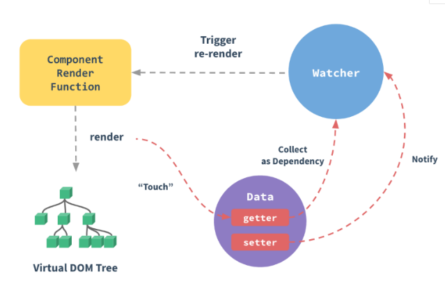

vue中的响应式数据绑定是通过数据劫持和观察者模式来实现的。
当然vuejs不可能是这样简单暴力的实现方式，vuejs是通过在实现一个观察者来实现的数据驱动。

首先，vuejs在实例化的过程中，会对遍历传给实例化对象选项中的data 选项，遍历其所有属性并使用 Object.defineProperty(方法会直接在一个对象上定义一个新属性，或者修改一个对象的现有属性， 并返回这个对象。) 把这些属性全部转为 getter/setter。
同时每一个实例对象都有一个watcher实例对象，他会在模板编译的过程中,用getter去访问data的属性，watcher此时就会把用到的data属性记为依赖，这样就建立了视图与数据之间的联系。当之后我们渲染视图的数据依赖发生改变（即数据的setter被调用）的时候，watcher会对比前后两个的数值是否发生变化，然后确定是否通知视图进行重新渲染。
这样就实现了所谓的数据对于视图的驱动。
实例化 =》 遍历对象中的data对象 =》遍历其所有属性并使用 Object.defineProperty 把这些属性全部转为 getter/setter 同时每一个实例对象都有一个watcher实例对象
观察者模式(
)
所谓的观察者模式我所认为的就是订阅发布。其中中间关于调度方法还有一点区别，这里就不多做叙述了
接下来给大家分享下我对所谓的发布订阅的理解吧，其实这种设计理念在react体现在了跨组件通信中，
原理就是订阅者写一个函数然后不执行，接着把其储存在某一个地方，等待着发布者去触发这个函数，然后
达到触发函数进行函数传参，从而能够达到组件之中的跨组件通信
具体代码如下
//第一种方式利用数组是比较啰嗦的
// const Observer={
// arr:[],
// $on(event,cb){
// this.arr.push({[event]:cb})
// },
// $emit(event,msg){
// //console.log(this.arr)
// this.arr.forEach(item=>{
// //console.log(Object.keys(item))
// if(Object.keys(item)[0]===event){
// item[Object.keys(item)[0]](msg)
// }
// })
// }
// }
//第二种方式利用对象
//这种方式只能监听一次 假如我们想要监听多次可以看下下面第三种方法
// const Observer={
// arr:{},
// $on(event,cb){
// this.arr[event]=cb
// },
// $emit(event,msg){
// this.arr[event](msg)
// }
// }
//第三种方式 多次监听的订阅者
const Observer = {
arr: {},
//订阅者监听函数
$on(event,cb){
if(this.arr[event]){
this.arr[event].push(cb)
}else{
this.arr[event]=[cb]
}
},
//发布者触发函数
$emit(event,msg){
this.arr[event]&&this.arr[event].forEach(cb=>{
cb(msg)
})
},
//销毁阶段
$delete(event){
delete this.arr[event]
}
}
//以下为封装检验过程
Observer.$on("up",(msg)=>{
//订阅者监听函数
console.log(msg)
})
Observer.$on("up",(msg)=>{
//订阅者监听函数
console.log(msg)
})
Observer.$delete("up")
Observer.$on("down",(msg)=>{
//订阅者监听函数
console.log(msg)
})
Observer.$emit("up",123)//发布者 做函数的触发
Observer.$emit("down",456)//发布者
//这样功能就可以实现了然后抛出使用了